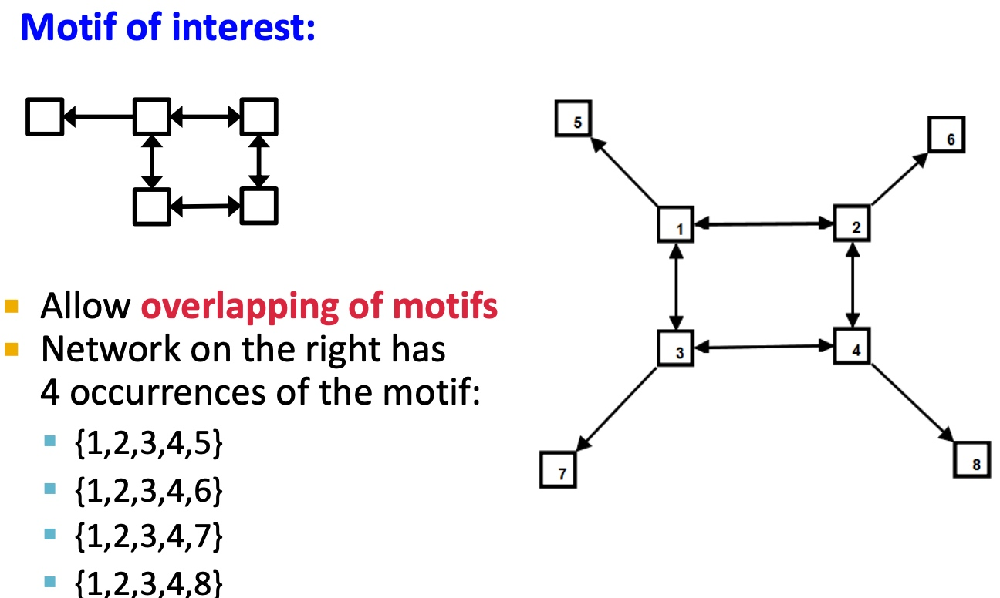
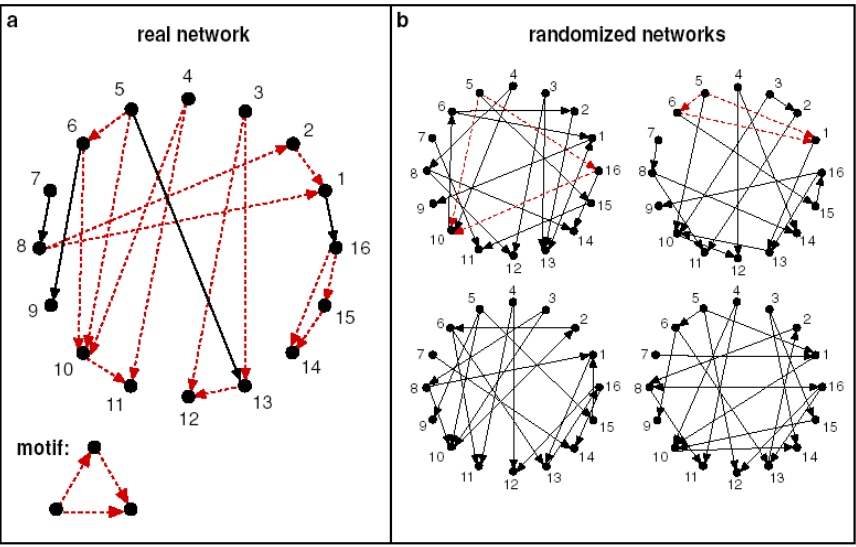
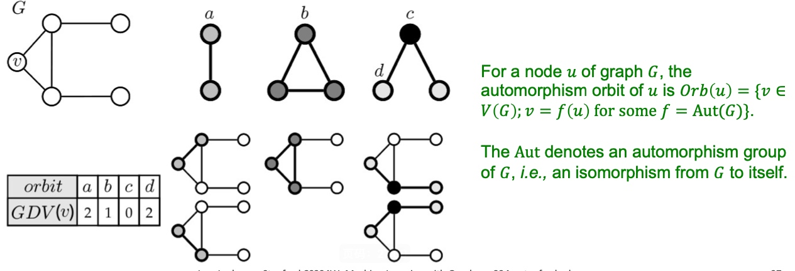
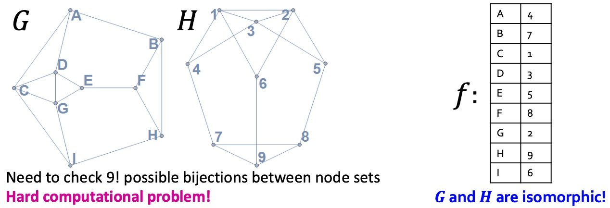
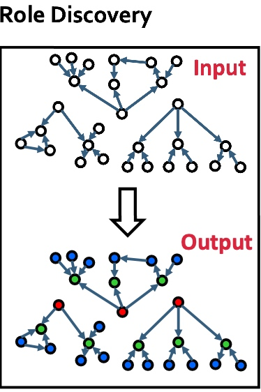

Subgraphs
何谓motif？ 图中反复出现的相互连接的模式，有以下三个特点：
- Pattern：小的能导出的子图；
- Recurring：频繁出现；
- Significant：模式的出现明显高于预期，如类似的random genderated networks中的模式；
Motif: Induced Subgraphs
Induced Subgraph如下图所示，图中红色框虽然也是3个节点构成的子图，但是该子图与待匹配的子图不匹配（连接不一致），而蓝色的三角框中的子图与待匹配的子图匹配， 匹配的意思是指必须是出现在待匹配子图里所有节点的边，如果不是待匹配节点之间的边，则不匹配；

Motifs: Recurrence
如下图，右侧图中出现了4个待匹配的motif，motif之间可以相互重叠；

Motif： Significance
如下图， 该motif在真实的网络中出现的频率要对类似的随机网络出现的频率要高的多， 我们成为其显著性明显；

显著性通常是和随机性网络做对比，通常使用\(Z_i\)来描述motif i的显著性， 其中\(N_{i}^{real}\)表示真实网络中motif i的数量， \(N_{i}^{rand}\)表示在随机网络中motif i的数量：
\[Z_i = \frac{(N_{i}^{real}-N_{avg\ i}^{rand})}{std(N_{i}^{rand})}\]
上面的计算会随着网络规模的不同而有数值的变化，而大的网络会倾向于有更大的Z-score， 归一化处理之后，使用Net significance profile来表示，motif i的SP计算公式如下：
\[SP_{i}= \frac{Z_{i}}{\sqrt{\sum_{j}{Z_{j}^{2}}}}\]
Configuration Model
配置一个和真实网络相同的度序列的随机图可以分为三步：
- 按节点的度序列生成Node spokes；
- 随机从nodes spokes中挑选两个连接起来；
- 根据源节点和目标节点，将步骤2中聚合起来，即形成和真实网络相同度序列的随机网络；

Alternative for Spokes: Switching
另一个产生于源图类似的图的方法就是随机做边交换，具体步骤如下：
- 从源图中随机找出边如，A->B, C->D，随机交换边的终点产生边A->D, C->B， 如果交换导致自己指向自己，则不交换；
- 重复1中，Q次， 当Q足够大时，即可生成随机图；
本节总结
经过上面的定义与解释之后，我们就可以定义如何检测一个motif：
- 在真实图中，统计induced subgraph的个数；
- 统计生成的随机网络中的induced subgraph的个数， 这里随机生成的网络，可以生成多个做对比；
计算Z-score， 那些高的Z-score就是我们需要的motif；
motif也有相应的变种， 如不同的频率概念、不同的显著性计算标准、null model的不同约束等等，但基本上都是万变不离其宗；
Graphlets: Node Feature Vectors
Graphlet是基础的由节点构成的基础子图单位，由两个节点开始，下图是2-5个节点的graphlet示例图：

那么，如何由graphlet来改造节点的特征呢？
之前我们提到的度，是指每个节点能够接触到的边数，这里我们扩展Graphlet degress vector，用来表示节点v能够接触到的graphlet的数量， 如下图，graphlet有a, b, c, d, 注意这里d和c画在一张图上, 这样我就可以用2, 1, 0, 2来表示节点V：

Graphlet degree vector的意义在与它提供了对于一个节点的本地网络拓扑的度量，这样可以比较两个节点的GDV来度量它们的相似度。由于Graphlet的数量随着节点的增加可以很快变得非常大，所以一般会选择2-5个节点的Graphlet来标识一个节点的GDV。
Finding Motifs and Graphlets
在一个图里识别出一种特定大小的motifs和graphlet，并计算它的数量是非常难的一个问题。识别是否是同构子图本身就是一个NP-hard的问题：计算量也会随着节点数的增加而呈指数增长，因此， 一般只识别节点数较小如3-8的motif或者graphlet。
Exact Subgraph Enumeration
ESU从一个节点\(v\)开始，算法分为两个集合：\(V_{subgraph}\):表示当前构造的子图，\(V_{extension}\)：表示能够扩展motif的候选节点， 将满足以下两个条件的节点\(u\)加入到\(V_{extension}\)：
- \(u\)的节点id要大于v的id；
- \(u\)只能是新加入加点\(w\)的邻居，而不能是\(V_{subgraph}\)里的节点邻居；
伪代码逻辑如下：

如下图就很容易理解了， 从不同的点出发， 比如node 1， node 1的邻居只有3， 所以开始extendsion为3， node2， 其邻居只有3， 所以extension为3， node 3， 其邻居有1、2、4、5，为保证id要大于node 3， 所以extension为4、5， node 4， 邻居有3、5， 保证id大于4所以extension为5， 第二层将exetension加入到subgraph， 且此时exetension要是新加入节点，如最左边分支，新加入节点为3，exetension要讲node 3的邻居加入，且保证大于node1 ， 即exetension变为2，4，5；左起第二个， 将exetension 中node 3加入， node3的邻居节点有1、2、4、5， 其中只有4、5大于原先subgraph中的2， 所有exetension为4、5， 以此类推即可，最终所有大小为3的子图即可遍历出来；

到目前为止， 我们就可以遍历出所有大小为的子图， 接下来我们只需要统计下这些图即可， 如下图所示， 需要判断是否为同构图，即拓扑结构完全一致：

Graph Isomorphism
如何判定两个图是同构？
如果图\(G\)和\(H\)是同构的，那么必定存在一个双向映射\(f: V_{(G}->H_{(H)}\)保证任意两个节点u和v在图G里面是相邻的，则\(f ( u )\) 和\(f ( v )\)在图H里也是相邻的, 检查图是否重构是一个NP难题

Structural roles in networks
Role: 角色， 是对节点在网络中功能的描述， 是有相同结构特征的点，相同角色的节点并不一定直接相连，而Group/Communities(社群)， 是彼此相互密集连接的节点群；
视频中举了个例子，假定一个计算机系构建一个社交网络，其中：
- 角色指： 教职、职员、学生；
- 社群指： AILab、Info Lab、 Theory Lab等；

如果节点u和节点v和所有其他节点有相同的关系，则说明节点u和节点v在结构上等同， 如下图中u和v完全相同；

Discovering Structural Roles in Networks
为什么要研究图当中的role ？如下图：

RoIX: AutoMatic Discovery of nodes' structural roles in network
RoIX特点如下：
- 非监督学习方法；
- 无需先验知识；
- 支持多种角色分类；
- 按边数线性扩展；

RoIX过程如下图， 其中最重要的Recursive Feature Extraction.

Recursive Feature Extraction是基于图的结构详细，从某一节点出发，聚合该节点的特征，如有向图中，该特征未出度、入度、度等等，其次基于该node的邻居、包含该节点的可导出子图，这称之为Egonet，也会提取Egonet中节点的特征。以此类推，用这种方法提取到的特征，是指数级增长，后续会使用裁剪技术将部分特征裁剪掉；
最终，每一个节点会由如下图的向量表示， 然后采用non negative matrix factorization（KL离散度距离来评估似然度） 即可完成流程图中node * role matrix与role * feature matrix的生成：